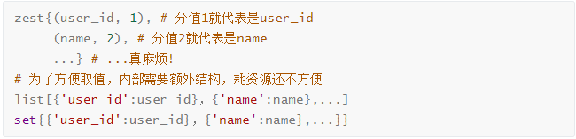

头条项目缓存与存储设计
[TOC]
1. 头条项目缓存方案
Cache aside
直接在视图函数中进行读写操作
- 读：先读取缓存中的数据, 没有才会读取数据库中的数据
- 写：先写/更新数据库，再删除缓存
Read/Write-throught
在Flask的视图函数中直接调用缓存层操作工具函数。
- 构建一层抽象出来的缓存操作层，负责数据库查询和Redis缓存存取
2. 头条项目缓存及持久化数据结构设计
要选择合适的数据结构和key来缓存或持久化存储数据
2.1 以用户基本信息为例
对应数据库中的user_basic
最终结论
- key :
user:{user_id}:profile- value :
string分析：
- 多个用户的数据，保存为一条还是多条？
- 结论：多个用户数据，保存为多条
- redis只能对一个key中的不同的name设置同一个有效期
- 从有效期的角度考虑，如果保存为一条，会造成缓存雪崩的问题
缓存key键的选择
结论：
user:{user_id}:profile
方便扩展
层级清晰
user:1:profile # 用户id为1的基本信息 user:2:profile # 用户id为2的基本信息 user:1:profilex # 用户id为1的扩展信息 user:2:profilex # 用户id为2的扩展信息缓存值类型的选择
结论：
string
zset list set跟hash相比不好取指定的值，并且在redis中耗费资源都比string多，所以排除zset list set
相比较而言，hash比string占用更多资源，缓存目的就是为了降低数据库压力，同时缓存响应速度越快越好
string类型在python进程中进行序列化及反序列化，并没有占用redis的资源

2.2 以用户关注为例
对应数据库中的user_relation
最终结论
- key :
user:{user_id}:following- value :
zset分析
key
- 参考本章节2.1小节，这里不做展开
value
- 分析：
- 打开产品原型文件，查看
我的-关注/粉丝，发现需要按时间顺序分页展示- 一个用户会存在关注多个用户的情况，用户关注最关键的是要缓存被关注用户的user_id，所以value需要存储多个被关注的user_id和对应的关注时间update_time
- 排除
- 排除string：如果string的话，就一次全部取出，对于
分页展示的业务场景浪费资源- 排除hash：只保存被关注的user_id和对应的关注时间update_time，大材小用，浪费资源
- 排除list：因为有update_time，如果要使用list，要么内部额外构建嵌套结构，要么按update_time的时间顺序写入list，也不合适
- 排除set：理由同上
- 就只剩下zset：可以用update_time作为user_id的分值，完美
user:{user_id}:following = { (user_id_1, update_time_1), (user_id_2, update_time_2), ... }
2.3 以用户搜索历史为例
什么样的数据可以用redis进行持久化存储？
- 高频查询且允许丢失的非关键数据采用redis进行持久化存储
头条项目在最初的时候，在数据库中创建了用户搜索历史表；但考虑到具体业务搜索历史被频繁查询，所以废弃了数据库中的user_search用户搜索历史表，而是把用户搜索历史数据持久化到redis中
- 输入框下拉搜索：用户在搜索界面中，输入一个字符就要查询一次，数据库资源宝贵，大量的该类请求会从整体上影响数据库的效率
- redis持久化存储，有可能丢失1秒的数据 ，用户搜索历史跟用户基本信息数据相比较，前者属于非关键数据，所以丢失1秒数据也是能接受的，且丢失1秒数据的情况不是高概率事件
所以我们来设计一下用户搜索历史的持久化存储的key和数据类型
- key :
user:{user_id}:his:searching- value :
[{keyword, search_time}]- type :
zset
2.4 以统计数据的用户发布数量为例
在头条用户端-个人页位置会展示用户发布的总数
- key :
count:user:arts- value :
[{user_id, count}]
- 把user_id作为zset的值（zset值不能重复，user_id是全局唯一的）
- 把发布总数作为scroe分数
- type :
zset考虑toutiao项目有MIS后台功能，需要统计或展示全部用户发布数量，存成zset就不仅方便查询一个用户的发布总数，也方便对所有用户的发布总数的进行统计
redis_key redis_value zset_value zset_score count:user:arts [ {user_id_1, count1}, {user_id_2, count2}, ]
3. [查表]头条项目缓存以及持久化数据结构表
- redis-cluster 缓存
- redis主从哨兵 持久化存储
3.1 User Cache 用户相关缓存
| key | 类型 | 说明 | 举例 |
|---|---|---|---|
user:{user_id}:profile |
string | user_id用户的数据缓存，包括手机号、用户名、头像 | |
user:{user_id}:profilex |
string | user_id用户的性别 生日 | |
user:{user_id}:status |
string | user_id用户是否可用 | |
user:{user_id}:following |
zset | user_id的关注用户 | [{user_id, update_time}] |
user:{user_id}:fans |
zset | user_id的粉丝用户 | [{user_id, update_time}] |
user:{user_id}:art |
zset | user_id的文章 | [{article_id, create_time}] |
3.2 Comment Cache 评论相关缓存
| key | 类型 | 说明 | 举例 |
|---|---|---|---|
art:{article_id}:comm |
zset | article_id文章的评论数据缓存，值为comment_id | [{comment_id, create_time}] |
comm:{comment_id}:reply |
zset | comment_id评论的评论数据缓存，值为comment_id | [{'comment_id', create_time}] |
comm:{comment_id} |
string | 缓存的评论数据 |
3.3 Article Cache 频道和文章相关缓存
| key | 类型 | 说明 | 举例 |
|---|---|---|---|
ch:all |
string | 所有频道 | |
user:{user_id}:ch |
string | 用户频道 | |
ch:{channel_id}:art:top |
zset | 置顶文章 | [{article_id, sequence}] |
art:{article_id}:info |
string | 文章的基本信息 | |
art:{article_id}:detail |
string | 文章的内容 |
3.4 Announcement Cache 公告相关缓存
| key | 类型 | 说明 | 举例 |
|---|---|---|---|
announce |
zset | 公告id和内容 | [{'json data', announcement_id}] |
announce:{announcement_id} |
string | 公告内容 | 'json data' |
3.6 阅读历史 持久存储
| key | 类型 | 说明 | 举例 |
|---|---|---|---|
user:{user_id}:his:reading |
zset | 用户阅读历史 | [{article_id, read_time}] |
3.7 搜索历史 持久存储
| key | 类型 | 说明 | 举例 |
|---|---|---|---|
user:{user_id}:his:searching |
zset | 用户搜索历史 | [{keyword, search_time}] |
3.8 统计数据 持久存储
| key | 类型 | 说明 | 举例 |
|---|---|---|---|
count:art:reading |
zset | 文章阅读数量 | [{article_id, count}] |
count:user:arts |
zset | 用户发表文章数量 | [{user_id, count}] |
count:art:collecting |
zset | 文章收藏数量 | [{article_id, count}] |
count:art:liking |
zset | 文章点赞数量 | [{article_id, count}] |
count:art:comm |
zset | 文章评论数量 | [{article_id, count}] |
count:user:following |
zset | 用户关注数量 | [{user_id, count}] |